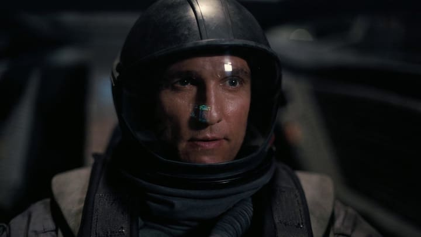
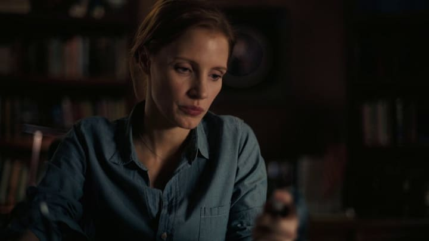
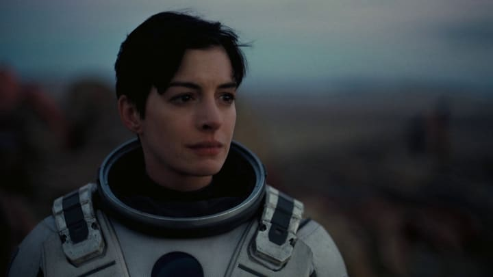
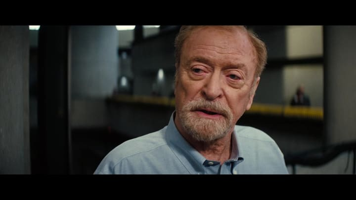
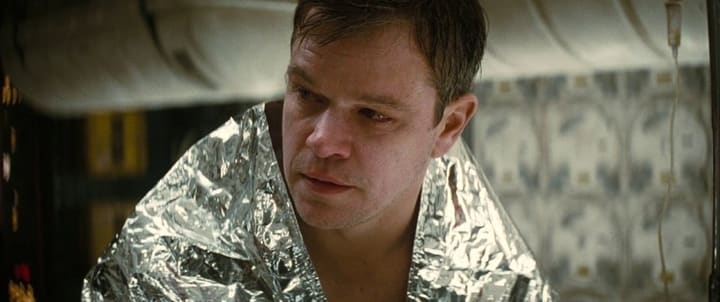
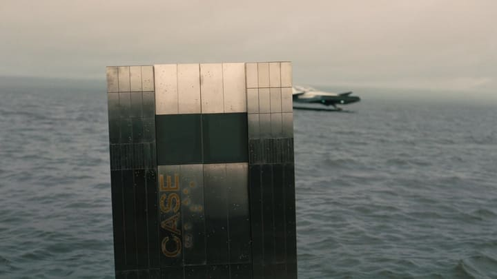

Personajes
Interstellar es, sobre todo, una historia de personas: un padre que promete volver, una hija que espera, un puñado de científicos que cargan con el futuro de la especie y dos robots con más sentido del humor que varios humanos. Estas son sus fichas —quién es cada uno, qué papel cumple en la misión Endurance y qué lo hace reconocible—, contadas para quien todavía no vio la película y con los spoilers justos.
Cooper

Quién es
Joseph Cooper es un ex piloto e ingeniero de la NASA en una época en la que ya casi nadie mira al cielo. Viudo, vive con su suegro y sus dos hijos, Tom y Murph, en una granja de maíz castigada por las tormentas de polvo. Extraña volar, pero se resignó a ser agricultor como todo el mundo.
Su papel en la historia
Una anomalía en la habitación de Murph lo lleva hasta una base secreta de la NASA, que le ofrece pilotar la nave Endurance a través de un agujero de gusano para buscar un mundo nuevo. Acepta con una promesa: volver. Ese regreso —y los años que pierde en el planeta de Miller— es el corazón emocional de la película. En el tramo final se deja caer dentro de Gargantúa y termina en el Tesseract, desde donde se comunica con Murph a través del tiempo: él era el "fantasma" de su habitación.
Rasgos distintivos
- Piloto por vocación, agricultor por obligación.
- Su brújula es la promesa a Murph, no la misión.
- Práctico y de reflejos rápidos ante una emergencia.
- El personaje a través del cual el espectador entra a toda la historia.
- Su reloj de pulsera es el canal del mensaje final.
Reparto: Matthew McConaughey.
Murph

Quién es
Murphy "Murph" Cooper es la hija menor de Cooper. De niña es terca, curiosa y está convencida de que hay un "fantasma" que le tira libros del estante. De adulta se convierte en física de la NASA y trabaja junto al profesor Brand en el problema que podría salvar a la humanidad.
Su papel en la historia
El día que su padre parte, ella se niega a despedirse; ese enojo la marca durante décadas. Mientras Cooper viaja, Murph crece, investiga y sospecha que el "Plan A" es una mentira. En el desenlace recibe desde el Tesseract los datos que su padre le transmite por la manecilla de un reloj, completa la ecuación de la gravedad y hace posible que la humanidad deje la Tierra. El "fantasma" de su infancia era él, todo el tiempo.
Rasgos distintivos
- De niña: obstinada, observadora, se pelea con lo que no entiende.
- De adulta: científica brillante y escéptica del discurso oficial.
- El resentimiento hacia su padre es el motor de su arco.
- "Murphy": lo que puede pasar, pasará —para bien y para mal—.
- Resuelve el problema que ninguna generación anterior pudo cerrar.
Reparto: Jessica Chastain (adulta), Mackenzie Foy (niña), Ellen Burstyn (anciana).
Dr. Brand

Quién es
La doctora Amelia Brand es científica y astronauta de la tripulación del Endurance. Es hija del profesor John Brand, el líder de la misión en la Tierra; conviene no confundirlos, porque ella viaja y él se queda. Es bióloga y la responsable de los embriones del "Plan B".
Su papel en la historia
Cuando hay que decidir el último planeta a visitar, discute con Cooper: quiere ir al mundo de Edmunds, el hombre al que ama, y defiende que el amor es información que hay que tomar en serio. Pierde esa votación, pero al final es ella quien llega —sola— al planeta de Edmunds y empieza a montar allí la colonia humana con los embriones. Cierra la película plantando el futuro de la especie lejos de casa.
Rasgos distintivos
- Hija del profesor Brand; parte en el Endurance mientras él dirige desde la Tierra.
- Bióloga a cargo del "Plan B" (los embriones).
- Sostiene que el amor es un dato, no una debilidad.
- Sobrevive a la misión y funda la colonia en el planeta de Edmunds.
- Contrapeso emocional del cálculo frío del resto de la tripulación.
Reparto: Anne Hathaway.
Profesor Brand

Quién es
El profesor John Brand es la cabeza de lo que queda de la NASA, que funciona en secreto. Es el padre de Amelia y el mentor de Cooper y de Murph: la figura de autoridad científica de la película, el hombre que recita a Dylan Thomas antes de cada despegue.
Su papel en la historia
En público trabaja en el "Plan A": una ecuación de la gravedad que permitiría despegar de la Tierra estaciones enteras con toda la humanidad a bordo. En su lecho de muerte le confiesa a Murph que esa ecuación no se podía cerrar sin datos del interior de un agujero negro —que creía imposibles de obtener— y que el "Plan B", repoblar con embriones en otro mundo, siempre fue el plan real. Mintió durante años para que la gente siguiera trabajando.
Rasgos distintivos
- Padre de Amelia; dirige la misión desde la Tierra y no viaja.
- Impulsor del "Plan A", la ecuación de la gravedad.
- Cargó en soledad con la certeza de que el Plan A no cerraba.
- Su mentira sostiene el esfuerzo de toda una generación.
- "No entres dócilmente en esa buena noche": su lema.
Reparto: Michael Caine.
Mann

Quién es
El doctor Mann es presentado como "el mejor de nosotros": el científico más admirado de las misiones Lázaro, el que inspiró a todos los demás a partir. Su planeta helado es el que envía las señales más prometedoras, así que el Endurance pone rumbo allí para despertarlo de la hibernación.
Su papel en la historia
La verdad es que su mundo es inhabitable y que Mann falsificó los datos para que alguien viniera a rescatarlo: no soportaba la idea de morir solo. Cuando la tripulación lo descubre, intenta matar a Cooper y huir con una de las naves; muere en un acoplamiento mal hecho que deja al Endurance gravemente dañado. Es el reverso oscuro del heroísmo de la misión: lo que el instinto de supervivencia puede hacerle a una buena persona.
Rasgos distintivos
- "El mejor de nosotros": referente moral de las misiones Lázaro.
- Falsificó los datos de su planeta para forzar un rescate.
- El miedo a morir solo por encima de todo lo demás.
- Único antagonista humano de la película.
- Su traición deja al Endurance herido y sin margen.
Reparto: Matt Damon.
TARS & CASE

Quién es
Son los dos robots de la misión, antiguas unidades tácticas de los marines reconvertidas para la exploración espacial. Tienen forma de bloques metálicos articulados que caminan, ruedan o se pliegan según haga falta, y parámetros que se ajustan por voz: humor, sinceridad, discreción.
Su papel en la historia
TARS acompaña a Cooper durante todo el viaje —es sarcástico, leal y siempre tiene una respuesta lista—; CASE se queda con Amelia Brand, más callado y metódico. CASE pilota la maniobra imposible de acoplamiento tras el sabotaje de Mann; TARS se deja caer con Cooper dentro de Gargantúa para medir desde el interior los datos cuánticos que Murph necesita y transmitírselos. Sin ellos, ni el aterrizaje ni el mensaje final serían posibles.
Rasgos distintivos
- Diseño monolítico articulado, sin cara ni rasgos humanos.
- Ajustes de humor y sinceridad regulables por la tripulación.
- TARS va con Cooper (irónico); CASE va con Brand (parco).
- CASE salva el acoplamiento tras el sabotaje de Mann.
- TARS entra en Gargantúa y transmite los datos cuánticos.
Reparto: Bill Irwin (voz y manipulación de TARS), Josh Stewart (voz de CASE).